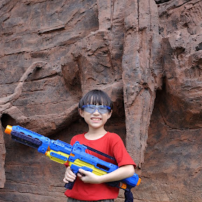

Biografi Saya

- Nama lengkap: Wilhelm Huang Indragunawan
- Usia Sekarang: 14 Tahun
- Tanggal Lahir: 5 September 2011
- Hobi:Bermain Game dan Coding
- Tingkat Edukasi: Kelas 8 SMP
- Riwayat Pendidikan: Sekolah di Santa-Laurensia sejak Nursery
- Tempat Tinggal: Garnet, Gading Serpong